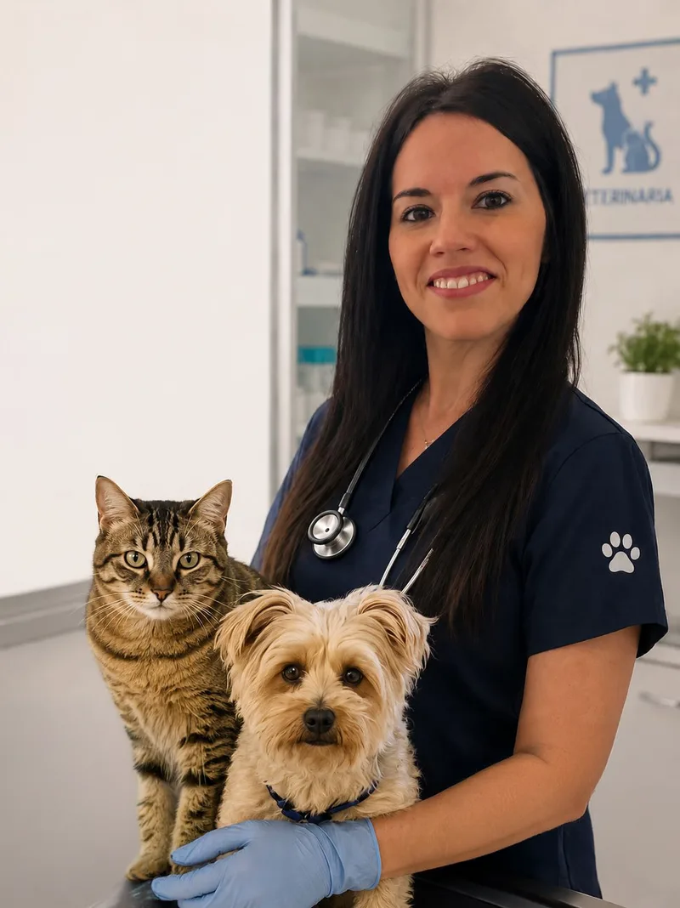

Veterinaria colegiada, apasionada por el bienestar animal y la medicina integrativa.

Me gradué en Veterinaria por la Universidad de Murcia en 2014 con la vocación clara de llevar la asistencia veterinaria directamente a los hogares. Desde el primer día supe que atender a los animales en su propio entorno reducía el estrés tanto para ellos como para sus familias.
Con más de una década de experiencia en la Marina Baixa, me he especializado en medicina natural y terapias alternativas, combinando la veterinaria convencional con enfoques más holísticos para ofrecer el mejor cuidado posible a perros, gatos y pequeños mamíferos.
En casa convivo con Luna, mi gata siamesa de 7 años, y Kiko, un golden retriever de 4 años que me acompaña en mis visitas cuando el tiempo lo permite. Entienden perfectamente lo que significan sus compañeros de cuatro patas para vosotros, porque para mí son familia.
Me mantengo al día con los últimos avances para ofrecer siempre lo mejor a tus mascotas.
Certificación oficial por el Colegio de Veterinarios de la Comunidad Valenciana. Técnica para el manejo del dolor crónico y rehabilitación.
Curso avanzado de medicina botánica aplicada a animales de compañía. Formulación de tratamientos naturales personalizados.
Diplomatura por la Asociación Española de Veterinarios Naturistas. Integración de protocolos homeopáticos en la práctica clínica diaria.
Especialización en el cuidado integral del animal anciano: diagnóstico, manejo del dolor y calidad de vida en etapas avanzadas.
Universidad de Murcia. Mención en medicina interna y cirugía de pequeños animales. Premio extraordinario de fin de carrera.
En su propio hogar, tu mascota está más tranquila y los diagnósticos son más precisos.
Tiempo real para escucharte, observar a tu mascota y diseñar un plan a medida.
Combino lo mejor de la veterinaria convencional con terapias naturales contrastadas.
Seguimiento post-visita y disponibilidad para consultas rápidas por WhatsApp.